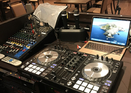
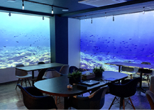
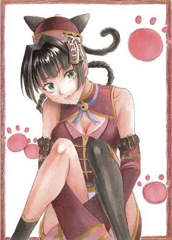

ILLUSTRATION
ENTERTAINMENT CREATIVE SUPPORT
アニメ・音楽・イラストで
“好き”を仕事の入口へ。
3D & MUSIC JAMは、イラスト、DTM、MV、動画編集、3Dに特化した エンタメ制作型の就労継続支援B型事業所です。
WORKS FIRST
利用者作品を主役に
WORKS GALLERY
最初に見せるのは、ここで生まれる作品。
既存LPの魅力である利用者作品を、ファーストビュー直下に配置。 「何ができる場所か」を説明より先に視覚で伝えます。



ILLUSTRATION
MUSIC / STUDIO
MOVIE / MV
3D / PORTFOLIO
CREATIVE MENU
イラストも、音楽も、動画も。作れることを大きく見せる。
単なる支援サービスではなく、作品が生まれるエンタメ事業所として設計。 制作ジャンルを先に見せることで、見学前の期待値を上げます。
BEGINNER & SUPPORT
派手に始めて、着実に続ける。
エンタメ感を前面に出しながら、未経験者・家族・支援者が安心して問い合わせできる情報も残します。 見学、相談、体験、継続までの流れを短く明快に見せます。
まずは見学だけでOK
作業内容と雰囲気を見てから相談できます。
好きな入口から始める
絵、音楽、動画など興味のある制作へ。
スタッフが伴走
ペースに合わせて小さく制作を進めます。
作品として残す
発表・ポートフォリオ化まで見据えます。
VISIT FLOW
見学から制作まで、迷わず進める導線に。
01見学
02相談
03体験
04継続
Q. 自分に合う作業があるか不安です。
A. 見学で制作内容と雰囲気を確認してから相談できます。
Q. コミュニケーションが苦手でも大丈夫ですか？
A. 無理のない関わり方を相談しながら進められます。
CONTACT
まずは見学で、好きが動き出す場所を見てください。
作品づくりに興味がある方、通い方に不安がある方、家族・支援者からの相談も受けやすいように、 CTAはシンプルに強く配置します。
制作事例をもう少し見る: ポートフォリオ
3D & MUSIC JAM
就労継続支援B型 / 利用定員20名
本部: 東京都千代田区九段北1-3-11 九段久保山ビル2F
説明会・体験会: 東京都中央区日本橋大伝馬町11-8 HATビル5F